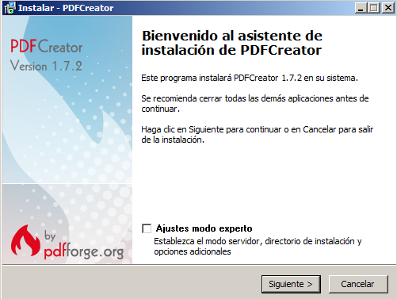
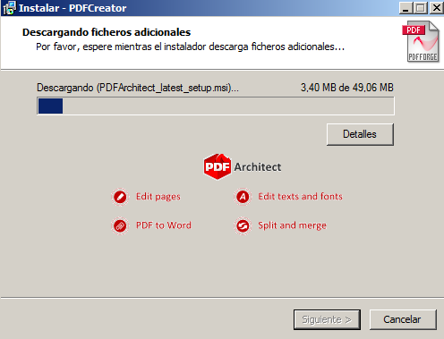
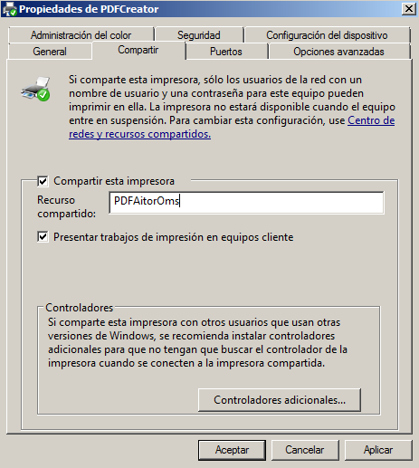
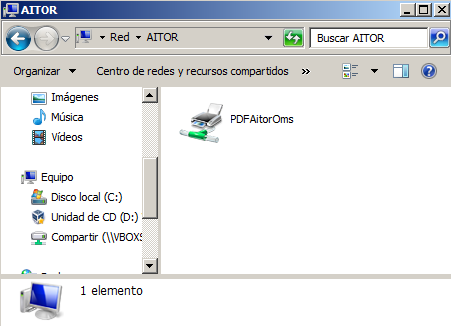
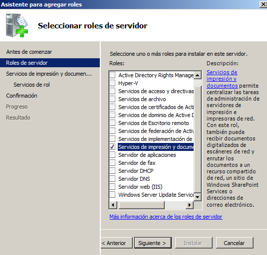
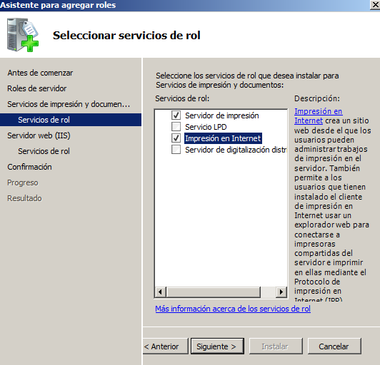
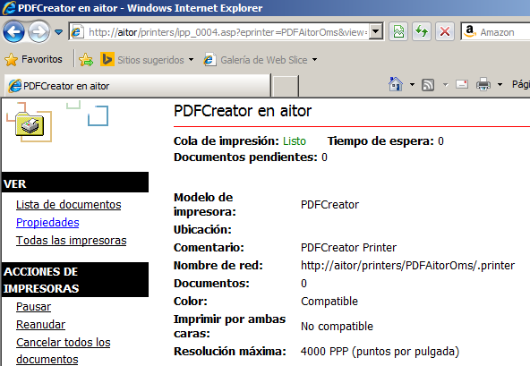

- Módulo: Sistemas Operativos
- Título del trabajo Plantilla HTML entrega de trabajo
- Componentes del grupo: David Vargas
- Curso Académico: 2013/2014
- Fecha de entrega: 1 de Enero de 2014
En primer lugar descargaremos PDF Creator ya que no tenemos una impresora fisica y este programa simula que lo es.
Hacemos click en la opcion siguiente, en la siguiente imagen se muestra el proceso de instalacion.
Comprobamos que la instalacion ha ido correctamente entrando en
Panel de Control=>
Hardware=>Dispositivos e Impresoras.
Observamos que PDFCreator aparece entre los demas dispositivos.
Tras comprobar que el dispositivo aparece entre nuestras impresoras
Haremos una prueba
de impresion creando un documento e imprimiendolo
con PDF Creator
Hacemos click derecho sobre el recurso compartido y le cambiamos el nombre.
Podemos observar que el recurso aparece compartido en la red con nuestro nombre.
Para ello es necesario habilitar el Rol del servidor de: Servicios de impresion y documentos
Dentro de los Servicios de impresion y documentos seleccionamos los siguientes servicios de rol:
Debemos acceder a la direccion "http://nombre del servidor/printers" para que aparezca en
nuestro navegador un entorno que permite gestionar las impresoras de dicho equipo.
Nos aparecera una ventana de seguridad en la cual ingresaremos nuestro nombre de usuario y contrasenia
Nos aparecera nuestra impresora, hacemos click en propiedades:
Finalmente imprimimos un documento y comprobamos que aparece en la cola al haber puesto en pausa
nuestra impresora. Nos aparecera algo como esto: